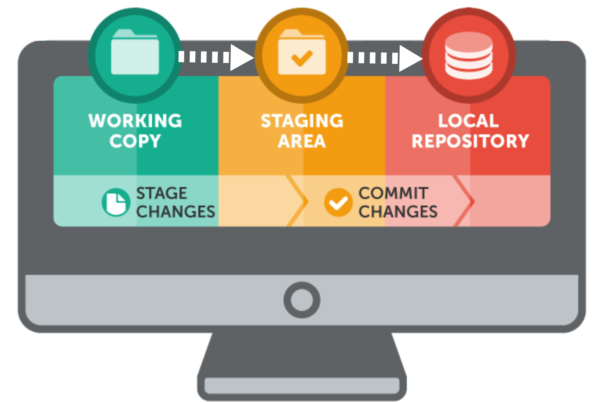

Collaborating on Code
Zach Sailer
What is our goal today?
To successfully work on a single project with many people.
a.k.a. to collaborate
How do we learn to code?
by writing bad code...
having it fail us...
headache...
learn and improve...
How do we learn to code?
working with others...
see from their ideas and mistakes...
learning and improve...
What do we need?
Version Control
Collaborative Platform
Version Control
Collaborative Platform
What is version control?
Meet Git


Git Vocabulary
Repository
a project folder tracked by git.Branch
a separate line of the repository with own tracking/history.Commit
save the state of the current line of development for a repository.Merge
combine two lines of development within a repository.
Repository
a project folder tracked by git.Branch
a separate line of the repository with own tracking/history.Commit
save the state of the current line of development for a repository.Merge
combine two lines of development within a repository.Example of Repository
Think of this as a folder in your filesystem
Example of Repository
Initialize the repo
user@machine:$ mkdir myproject
user@machine:$ cd myproject
user@machine:myproject$ git init
Initialized empty Git repository in myproject/.git/
user@machine:myproject$ ls -a
. .. .git
Example of Repository
Add a file to your repo
user@machine:myproject$ "Git/Github tutorial from UO Bioinformatics program" > README.md
user@machine:myproject$ git status
# On branch master
#
# Initial commit
#
# Untracked files:
# (use "git add ..." to include in what will be committed)
#
# README.md
nothing added to commit but untracked files present (use "git add" to track)
Example of Repository
Add a file to your repo
user@machine:myproject$ git add README.md
user@machine:myproject$ git status
# On branch master
#
# Initial commit
#
# Changes to be committed:
# (use "git rm --cached ..." to unstage)
#
# new file: README.md
#
Example of Commit
Changes that are tracked.
Example of Commit
user@machine:myproject$ git commit
1 Adding readme to project.
2 # Please enter the commit message for your changes. Lines starting
3 # with '#' will be ignored, and an empty message aborts the commit.
4 # On branch master
5 #
6 # Initial commit
7 #
8 # Changes to be committed:
9 # (use "git rm --cached ..." to unstage)
10 #
11 # new file: README.md
12 #
Boom! Achievement unlocked!
Local git repository
user@machine:myproject$ git log
commit 0000000somecommitnumber00000000000000
Author: Zsailer
Date: Thu Jul 7 10:41:05 2016 -0700
Adding readme to project
local git workflow
Example of Branch
Work on a new feature using a separate line of development
Example of Branch
List current branches.
user@machine:myproject$ git branch
* master
Create a branch named feature
user@machine:myproject$ git branch feature
user@machine:myproject$ git branch
feature
* master
Switch to that branch.
user@machine:myproject$ git checkout feature
Switched to branch 'feature'
Exercise 1: add to the your feature branch
- Create a new file to this branch.
- Add it to your git workspace
- Commit it to your project history.
Hint: Repeat the same steps as we did with the master branch.
Exercise 2: add a new (and different) file to your master branch
checkoutyour master branch.- Create a new file.
addit to your git workspacecommitit to your project history.
Note: the file you added to the feature branch is not in your repository.
Example of a Merge
Merge two lines of development
Example of a Merge
Make sure you are on the master branch
user@machine:myproject$ git branch
feature
* master
Merge feature branch into master branch.
user@machine:myproject$ git merge feature
Merge made by recursive.
test.txt | 1 +
1 files changed, 1 insertions(+), 0 deletions(-)
create mode 100644 test.txt
now meet Github
What is Github?
Public facing, remote host for Git version-controlled projects.
Home for collaborative discussion, hosting webpages, and